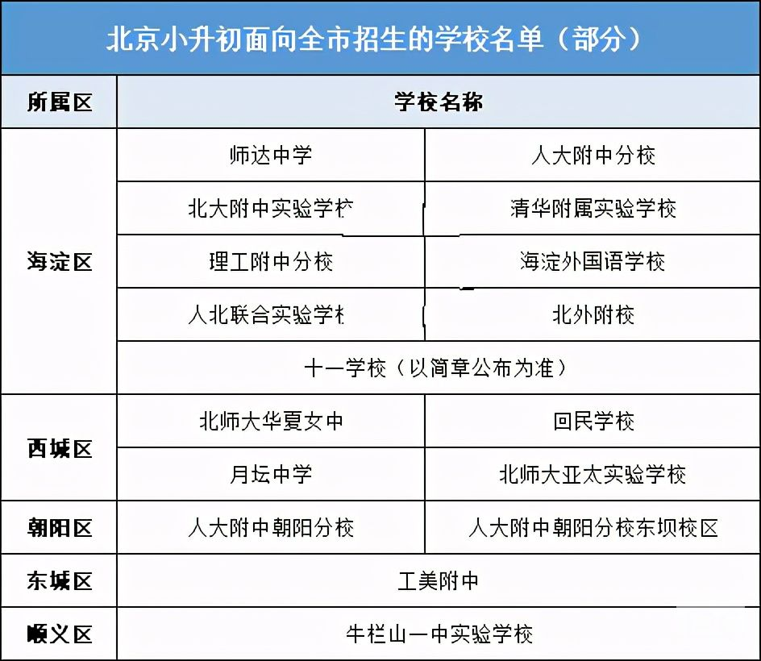

来源：搜狐新闻 编辑：xuwenwei
2021-01-14 10:14:49
2020年北京小升初政策相比往年有了很多变化，这些“变化”是否会一直延续未来小升初？尚不能定论。但对2021及以后小升初家长来说，提前了解，肯定没错！小编今天整理了2020年北京小升初政策中提到的3方面4大变化，供关注小升初的大家了解。
阅读目录：本文主要将包括入学途径、学校招生、非京籍入学3个方面，4点变化。
入学途径
关键词1：进入摇号时代
公办寄宿、民办校这些往年学校自主招生的途径，在2020年也实行统一填报志愿，派位录取的方式，有关城区有海淀、朝阳、西城、丰台等。
海淀区：公办初中登记入学、公办寄宿学校（班）、民办学校一次填报志愿，最多可填报10个，可不满额，可放弃。
朝阳区：民办、公办寄宿、全区范围内的公办初中、一般公办初中归并为一批次派位，也是一次填报志愿，每名学生每种入学方式限报一所学校，可以不满额填报。
西城区：西城区民办校为北师大亚太实验学校，也是在系统中报名，然后进行派位。
东城区：往年有提到通过寄宿入学，2020年政策中取消了这一途径，未来东城区小升初是否还会有寄宿途径，还需看当年政策。
丰台区：公办走读、公办寄宿、民办归并为一批次派位，所见即所报，最多填2个志愿，可报可不报，不是必须报，一旦被录取，必须遵循录取结果。
关键词2：东城对口直升比例不再增加
2020东城区将一定比例对口直升入学改为“定向名额派位入学”，当选择定向名额派位入学的人数小于定向名额学校计划时直接入学，选择定向名额派位入学的人数大于定向名额学校计划时派位入学。
该定向名额数固定，在未来延续使用。也就是比例不会再提高，将延续2020年的比例，关注此途径的东城区小升初家长需注意。
学校招生
关键词3：自主空间缩小
往年，部分民办校、西城特色校面向全市招生，且可自主报名，后续以学校通知为准即可。2020年小升初以上两类学校自主空间也缩小了。
部分民办校还可面向全市招生，但名额有限，且需网上填报志愿，并被摇号；西城特色校如华夏女中、月坛中学等，也需网上报名，先进行派位，派位成功的学生需到校现场审核材料确认，这一步结束后才公布最终录取结果。
再有是备受小升初家长关注的十一学校及其分校，今年都开放了自主报名，但十一学校也强调了面向海淀区，其余分校也是面向本区招生，如十一龙樾、十一亦庄等。

非京籍入学
关键词4：部分城区2021年将再审材料
2020年部分城区明确了2021年非京籍小升初入学要求，将再对材料（主要是四证）进行审核，不合格者将不能在该区小升初。包括城区有：西城、东城、顺义等。
政策中提及的四证包括：务工就业证明、实际居住证明、全家户口簿、北京市居住证（或有效期内居住登记卡）”。务工就业证明和北京市居住证各区要求或有不同，有的需要在本区（如东城区），有的要求是北京市即可，家长们还需以本区当年政策为准。
小结：
以上即是2020年小升初发生的变化及对未来走向的说明，关注北京小升初的2021及其他年级家长需尽早了解政策动向，才能有机会将入学主动权掌握在自己手中！
（声明：本文来源综合整理自北京市教委、各区招生考试中心、家长分享，北京新文达在线整理分享，若有侵权，请联系管理员删除。）
超想知道！海淀小升初100余所小学登记入学所在区域及对应中学
2020-11-24 10:31:592020年成都小升初划片最全汇总！对比2019年，有这些变化！
2020-11-24 10:27:45精品学习网(5iedu.com.cn)在建设过程中引用了互联网上的一些信息资源并对有明确来源的信息注明了出处，版权归原作者及原网站所有，如果您对本站信息资源版权的归属问题存有异议，请您致信qinquan#5iedu.com.cn(将#换成@)，我们会立即做出答复并及时解决。如果您认为本站有侵犯您权益的行为，请通知我们，我们一定根据实际情况及时处理。